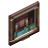

小型画作
Small Painting
英文名: Small Painting命名空间 ID:
candlelight:painting类型: 方块所属模组: [Let's Do] Candlelight资料检索: 🔎 在 MC百科 搜索「小型画作」合成获得 (1)

原始 JSON
{
"type": "minecraft:crafting_shapeless",
"ingredients": [
{
"item": "minecraft:painting"
}
],
"result": {
"id": "candlelight:painting",
"count": 2
}
}